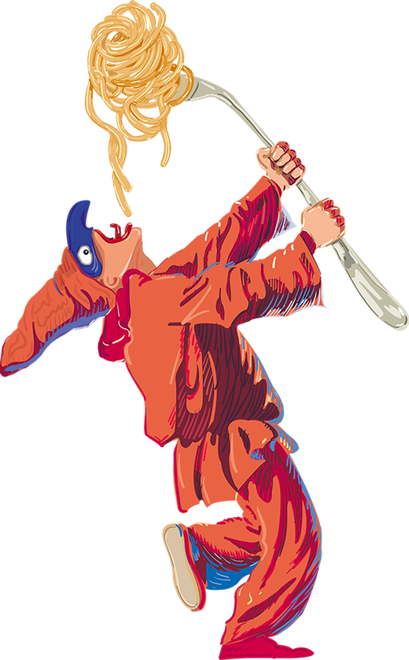
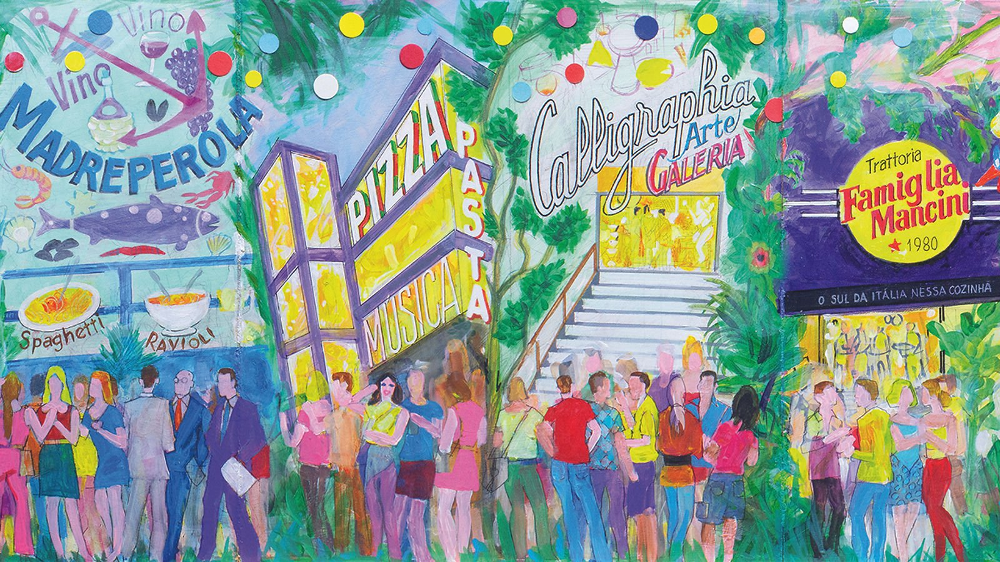
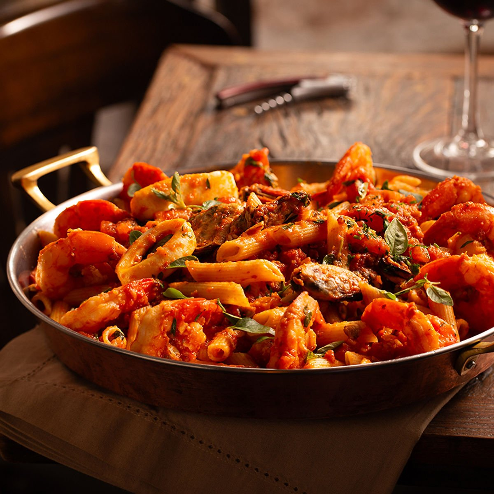
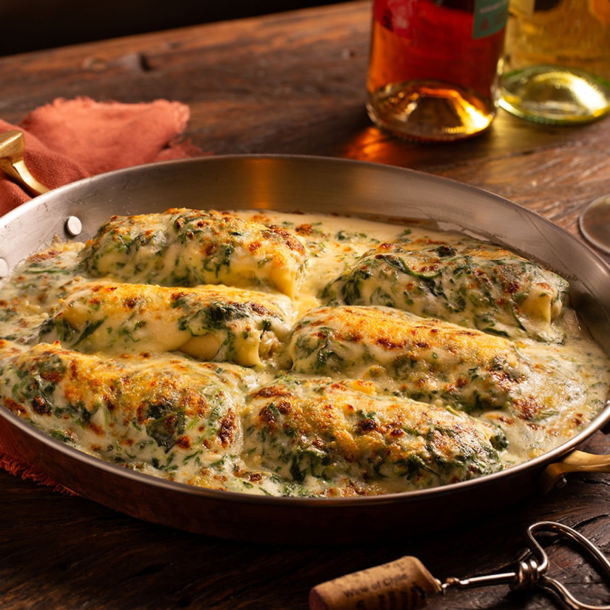
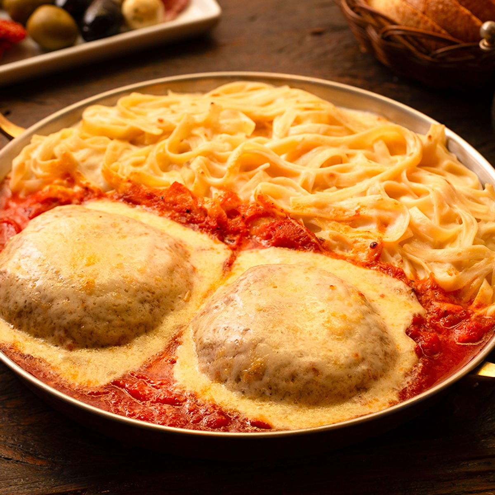
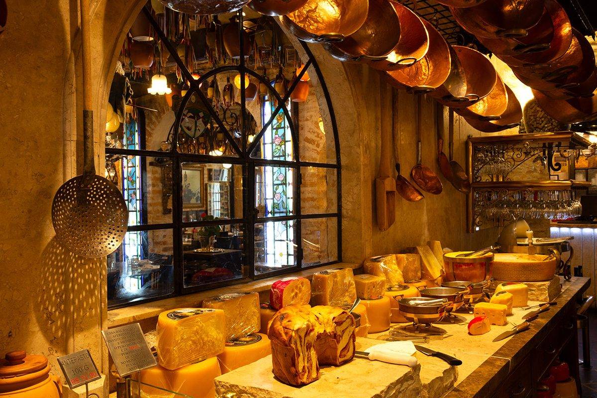

O Sul da Itália nessa cozinha.
Porções generosas para compartilhar, ambientes ricamente decorados e uma sala de antepastos com mais de 70 opções. Uma tradição de mais de quatro décadas no coração de São Paulo.
Uma casa com mais de quatro décadas de história.
Fundada em maio de 1980, a Famiglia Mancini Trattoria é a casa tradicional do Grupo Mancini. Ao longo das décadas, mais de 15 milhões de pessoas foram recebidas em seus ambientes, ricamente decorados e com uma fonte em seu interior.
Os pratos, reconhecidos por suas porções generosas, são servidos para atender a duas ou mais pessoas — pensados para serem compartilhados, à mesa, em família.
- Sala de antepastos com mais de 70 opções
- Porções generosas, para compartilhar
- Ambiente histórico com fonte interna

Alguns pratos da casa.
Massas artesanais, molhos de família e porções pensadas para a mesa toda. Veja o cardápio completo em PDF.

Penne com Frutos do Mar
Camarões, mexilhões e lula ao molho de tomate fresco com manjericão.

Canelone Fiorentina
Massa recheada de ricota e espinafre, gratinada ao molho branco.

Fetuccini com Polpetone
Fetuccini ao molho branco com polpetone gratinado ao sugo.
Uma sala de antepastos que é quase um museu.
Copperware pendurado, queijos e embutidos expostos, vitrais e uma fonte no salão — um cenário que faz parte da experiência tanto quanto a comida.

"A sala de antepastos com mais de 70 opções é servida no centro do salão, entre arcos de pedra e vitrais originais."
Ambiente da Trattoria, Rua AvanhandavaReserve sua mesa.
Escolha a data, o horário e o número de pessoas. Você recebe a confirmação na hora.
Minhas reservas
Nenhuma reserva ainda.
Antes de vir para a Avanhandava.
Não. Os pratos da Trattoria são servidos em porções generosas, pensadas para atender duas ou mais pessoas à mesa.
Recomendamos reservar, principalmente às sextas, sábados e vésperas de feriado, quando a casa costuma ficar cheia.
A sala de antepastos com mais de 70 opções está incluída na experiência da mesa — consulte a equipe sobre a política vigente ao chegar.
Sim, o cardápio conta com opções vegetarianas entre massas e antepastos. Consulte o cardápio completo em PDF.
Sim. Na lista "Minhas reservas", use os botões "Editar" ou "Cancelar" — você será direcionado ao WhatsApp da casa com sua reserva preenchida, e é só confirmar por lá.
Trabalhamos com 15 minutos de tolerância após o horário reservado. Passado esse período, a mesa poderá ser remanejada.
Te esperamos na Avanhandava.
Uma tradição de mais de quatro décadas, pronta para receber a sua mesa.